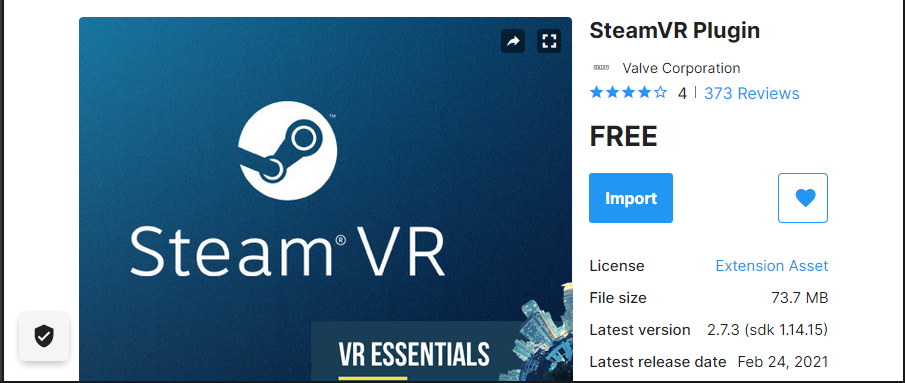

Setting up SteamVR
SteamVR™ is the ultimate tool for experiencing VR content on the hardware of your choice.
Quickstart
You will need to have SteamVR™ installed through Steam and a SteamVR™ -compatible headset.
Get SteamVR on Steam View on Web
Importing on Unity
-
Import SteamVR Plugin from the Asset Store by going to
Window→Asset Storeor clicking on the Asset Store tab in the editor. -
Search for
SteamVRin the search box. -
Scroll down and find the SteamVR Plugin.
Info
SteamVR is free on the Unity Asset Store. Make sure you select the correct one!
-
To import the SteamVR Plugin:
- Click on the blue
Importbutton.
Note
If this is your first time importing, you need to first
Downloadbefore importing.
- Click on the blue
-
Wait for the dialog to finish.
-
Click the
Allbutton at the bottom left corner →Import. -
If this is your first time setup, this may pop up. Click on
Legacy VR.Info
You could also use UnityXR, but there will be several bugs related to it. We recommend sticking to Legacy mode until it is made obsolete for real
-
Since we are developing for VR, click on
Yes. -
Again, first time setup, click
Accept All. -
Click
Ok. -
You have successfully imported SteamVR Plugin to Unity! You should find that the following have been added to your Project Manager.
Enabling VR Support
Before you can use SteamVR on Unity, you will need to change some settings to enable VR features.
- Click on
File→Build Settings. - Click
Player Settings. - Click on
Playeron the left bar →Computer Icon. - Navigate to
XR Settings. - Make sure that
Virtual Reality Supportedis checked. - Under the
Virtual Reality SDKs, make sure thatOpenVRis there.- If
OpenVRis missing, click on the+icon and selectOpenVR.
- If
- Remove any other SDKs (e.g. Oculus) by selecting them and clicking the
-icon. - You can now close all the settings windows.
Basic Scene
This section will teach you several SteamVR features that you would use when developing an app.
Adding a VR Player
Adding a VR-mode player is as easy as drag and dropping a prefab to the scene - literally!
- Search for a
Playerprefab under SteamVR assets. - Drag and drop to the the scene or the project hierarchy.
- Delete the
Main Cameraobject from the scene hierarchy. - That's it!